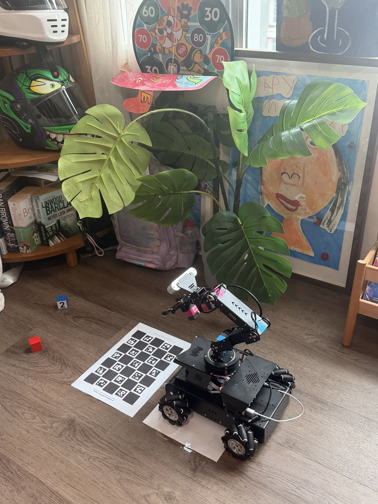
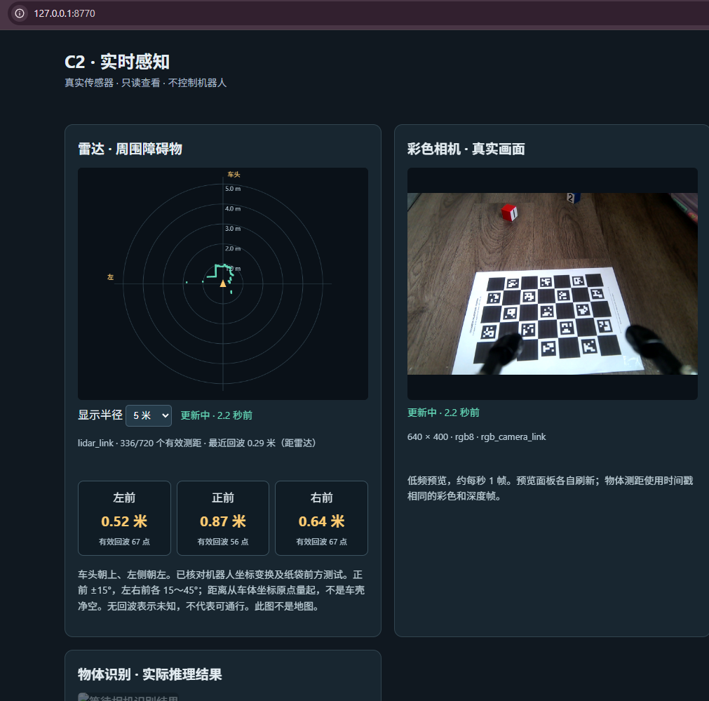

2026.10.14 · 用尺子把真实布局带回模拟，再试着抓起来 前面的模型拟合存在一个问题：相机、机器人和纸的位置同时不确定时，数学上可以让图像更接近，三维布局却可能不合理。我于是用尺子量出真实间距，并在照片上画出车体和两个前轮的轮廓。这张图成了独立于相机拟合的布局约束。
绿色 W 是两个前轮，body 是车体轮廓；上方绿色横线是棋盘图案近边，蓝线是车体前沿。测量时纸和机器人仍在关机充电前的原位置。 棋盘图案近边到前轮最前端：8.3 cm 。 棋盘图案近边到车体前沿：7.1 cm 。 两张 A4 的纸边间距：3 cm 。纸边与棋盘图案边不是同一条线。 结合模型中车体和轮胎的前沿，得到棋盘近边在机器人中心线处约 207.5 mm 的位置。手绘轮廓辅助估计横向位置和偏航，但不当作毫米级实物尺寸。这提供了实测 ground truth 约束，并不是完整、无误差的六自由度测量。
同尺度俯视对照：左侧是旧 default 批次拟合布局，右侧是加入实测约束后的布局。黄色为标定板、绿色为前轮、灰色为车体，白点为 base_link。旧拟合的棋盘近边约在中心线前方 147 mm、板面 z 约 −43.2 mm；实测约束后近边约 207.5 mm，板面固定为地面 z=0。负高度属于旧拟合的不合理结果，不是真实纸面高度。 固定纸和 default，只调整相机 锁定实测布局、保存的 default 关节和相机内参，不再靠移动纸来凑图。仅优化相机安装位置和朝向，保留完整夹爪。相机位置相对名义光心调整约 10.9 mm，朝向总变化约 20.1°。
真实相机照片。 同一 default 姿态的 Isaac 渲染。 22 个共同检出角点，渲染对真实照片 RMS 约 0.28 像素 。 这解决了当前 default 参考画面的主要对齐问题，不代表所有关节姿态都已校准。冻结相机后跨姿态仍有明显偏差；同样报告 4°的去程与回程，真实角点差约 19.1 像素。模型、反馈和方向相关机械响应仍需区分。因此先采用少数可重复的工作姿态，而不是宣称任意姿态 sim/real 完全一致。
把实验过程做成网页实验台 反复调试时，只在聊天里看指令和数字很难跟上进度。我和 Codex 做了一个 C2 网页实验台，把实验记录、结果分析、姿态计划、实验笔记和数据导出集中起来，方便回看每一步做了什么、得到了什么结果。
另一个很实用的改进是网页电池电量提示 。之前担心电池耗尽，总要打开手机 App 查看，打断实验。现在实验台可以显示读取到的电量估计、更新时间和连接状态，连接正常时不必为了看电量反复切换手机。
实验台截图中的电量连接已中断，显示的是“上次约 0%”，并明确标记数据过期，不代表拍图时或现在的电量。百分比来自厂家按电压估算，可能随负载波动；充电状态和剩余使用时长未知。电量功能只读，未连接运动控制。下方 0.289°、27/27 和 6/6 是特定实验的记录摘要，不是整机精度或通用抓取成功率。 工具的价值除了看到数值，也在于看清数值是否仍然有效：旧数据保留供追溯，但不能冒充实时状态。后续图像对比也沿用绿圈、红十字与位移连线，明确标注两组观测，让差异更容易看懂。
实验台的证据页：固定厂家姿态下，30 秒只读试跑记录了 27 个真实样本，地面倾斜最大约 0.29°，参数在采集前固定。下方对比厂家近看姿态、累计抬视线约 4°和约 8°的真实画面；截图中的相机俯角是估计值。 这里检验的是固定近看姿态的方向补偿与短时稳定性，不是毫米级位置精度，也不代表任意关节姿态都已标定。页面同时保留了误差下降的结果和验证范围，避免把局部成功理解为整个工作空间都准确。
最后的取舍：接受硬件与模型限制，优先做成可用的抓取流程 经过这些测试，我们没有把所有差异都归咎于真机。仿真与照片不一致，可能来自相机安装、关节轴或零点、连杆尺寸、夹爪几何，也可能包含执行误差；同样报告角度的两张真实照片仍不同，则还需要考虑运动方向、反馈含义、结构变形或现场变化。现有数据不足以把这些因素完全分开。
因此，我们接受一个实用的折中：不再以任意随机姿态下 sim/real 完美重合为当前目标，而是在寻找、接近、抓取所需的有限姿态范围内，让定位足够准确、动作可以重复。 这不是宣称误差消失，而是主动缩小需要验证的范围。
寻找目标： 采用固定的远看观察姿态，发现目标后让底盘靠近。抓取准备： 回到可重复的 default 姿态，重新观察并定位目标。目标上方对准： 夹爪到达目标上方先停住，相机向下观察，确认对准后再下降抓取。第三阶段通常是一小组姿态，而不是一个固定角度组合。可以通过选择底盘停车位置，把目标尽量放进一个限定的小抓取区域。相机与夹爪相连，调整视线也可能改变夹爪位置；接近时还可能遮挡目标，所以需要同时验证“看得见、够得着、能下降”。
执行上优先固定常用姿态与接近方向，在关键位置停住重新定位；实时视觉修正作为后续工作。最终判断依据是能否可靠找到、对准并抓到目标，而非每张渲染图都完美重合。当前 default 对齐已有结果，两次抓取已在简化仿真通过；远看姿态、各个上方对准姿态、连续视觉修正和完整真机抓取流程仍需分别验证。 这是后续实验的工作原则，不是已经完成全流程验证的声明。
实验一：已知目标位置的抓取仿真 把 3 cm 红方块放在照片对应的中央列、中心格往远离机器人方向一格的格子中心，从 default 开始。这一轮明确使用场景目标坐标规划，用来先验证几何路径和简化接触。测试的竖直上方路径原地未达到规划误差要求；底盘前移 8 cm 后可达，纸和方块保持不动。
流程：靠近 → 上方停留 6 秒 → 下降 → 合爪 → 抬升并保持 6 秒 → 松爪。方块中心保持在约 12.11 cm 高，约抬起 10.6 cm，松爪后落地。没有将方块绑定到夹爪。
实验二：让第一视角自己找红方块 第二轮不再向识别器或规划器提供方块真值坐标。先用第一视角 RGB 分割红色轮廓，再结合相机标定、已知 3 cm 尺寸与水平地面，拟合三维中心。没有使用棋盘格子位置或深度图。场景真值只用于布置、物理评分及事后对照。
实际图像检测：轮廓重合率 97.44%，边界拟合 RMS 0.56 像素；这不是识别置信度。 规划完成后才核对真值，本次中心误差约 0.53 mm 。空白图会停止定位；把输入图像右移 20 像素，估计横向位置也变化约 15.6 mm，验证结果不是预存坐标。随后用视觉估计重新规划，成功夹起并保持：中心高度约 12.24 cm，松爪后落地。
验证边界： 两次都是离线仿真，真机在充电，没有动作。机械臂采用理想运动驱动，方块是动态刚体；未验证真实力矩、回差、车轮动力学和全程自碰撞。视觉实验是起始图像定位后执行路径，尚不是连续视觉伺服；0.53 mm 只属于这次理想场景，不能当真机精度。绿色框来自各帧实际红色检测。两路视频均由同一组物理记录重放，58 秒、1×、5 fps。
对齐统计 · 实验一结果 · 实验二结果 · 视觉定位事后核对
2026.10.14 · 让真实地面在机器人坐标里保持水平 今天把重点从数字影子转回真实 C2：相机可以朝下倾斜，但转换到机器人坐标之后，水平地面不应该跟着歪。用 A4 ChArUco 标记板、真实关节动作和同步相机数据，开始检查这个转换。
为什么开始这次标定：厂家模型与现场对不上 这次实验不是为了单纯打印一张标定板。10 月 13 日，我们沿用厂家提供的 URDF，并结合 ROS 里的关节状态与坐标变换，推算相机姿态和看到的物体位置。与现场观察核对时，发现这条换算链给出的结果存在偏差：真实地面在机器人坐标中呈现倾斜，相机安装关系与模型也需要进一步核对。仅仅能接收到 ROS 数据、让模型跟随关节变化，并不代表算出的空间位置已经准确。
发现偏差后，我们先讨论过向厂家询问：是否有配套的补偿算法、更准确的 URDF，或更完整的相机安装与关节参数。随后我决定先自己做反向分析，用真实机器人的响应核对模型。到了晚上，思路逐渐收敛到一项可以自己完成的实验：打印 ChArUco 标定板，用相机对已知几何的观测建立独立参考，再验证模型误差和修正效果。这是当时讨论过的两条路径，并不表示厂家已提供新的算法或模型。
这里的“reverse engineer”是从真机观测中辨识模型与实际响应的差异。ChArUco 板不会自动消除误差；它提供一把可以重复观察的尺子，让后续的补偿有依据，也能用新的姿态检验是否真的改善。
因此，10 月 14 日的目标是用独立的视觉参考核对这条链：打印已知尺寸的 ChArUco 板并固定在地面，让真机在若干姿态下观察它，比较“厂家模型和 ROS 数据推算的朝向”与“图像测得的实际朝向”，再用未参与拟合的姿态检查补偿效果。
发现的是整条坐标换算链与实物不一致，并不能据此断言厂家 URDF 本身全部错误，或 ROS 的数学计算有问题。 厂家模型与这台实物的相机安装差异、关节报告值与真实角度不一致、转动方向相关的机械响应，都可能贡献误差。目前验证的是限定姿态下的方向补偿；尚未把各项误差唯一分解，也未完成物体绝对位置标定。
1. 打印 ChArUco，让误差可以测量 起点很直观：真实地面是水平的，但用原来的相机与关节模型换算后，地面在机器人坐标里却是斜的。今天要修正的是这条真机相机坐标转换链。
先生成可打印的 A4 ChArUco 标定板和独立参数配置。A4 为 210 × 297 mm；板面为 5 × 7 格，方格边长 35 mm，内部标记边长 25 mm，字典为 DICT_5X5_100，legacyPattern=false。打印设置使用实际大小 100%，避免“适合页面”改变尺寸。用户完成打印后，将它作为相机能识别的已知几何参考。
2. 从书上移到地面，重新建立固定参考 纸张最初放在约 5 mm 厚的书上，后来直接贴到地面，位置也完全改变。因此地面固定后的数据重新建立参考，不能沿用之前标定板的绝对位姿。纸张保持平整、后续采集期间不移动；旧段只用于分析相对关节响应。水平参考仍依赖地面平整和底盘 Z 轴竖直的假设，并非精密水平仪测量。
3. 先确认能控制真机，再采集标定数据 开始几次仅看到程序报告角度变化，现场却看不到动作，因此没有把“指令发出”当作“机器人已运动”。逐步排查控制链后，用户分别目视确认 Joint 0–3 的实际转动和返回。随后在已测试范围内低速采集单关节及组合姿态：动作前提醒观察，转到目标后停稳，记录关节报告值与 ChArUco 相机图像，再返回基准。它不是穷举每个角度，而是用不同幅度、不同关节和组合姿态暴露模型误差。
实际执行中还遇到预览延迟：画面暂时没回到原样，并不等于机械臂返回失败。回位需要结合稳定后的新图像判断，不能只看旧预览。

这次的现场：C2 真机、机械臂相机和地面标记板。早期标记板放在书上，后来直接固定到地面，并重新建立采集基准。 4. 误差不只是一个固定安装角 逐关节验证控制后，发现相同的报告角度并不总对应相同的实际姿态。Joint 2 从不同方向到达同一个目标时，相机位姿相差约 2.55°、8.32 毫米。这支持方向或运动历史相关的响应，但还不能唯一判断是机械回差、舵机死区还是受力变形。
固定倍率没能解释小幅动作：Joint 1、2 各转约 4°的组合，原补偿仍留下约 3.30°地面倾斜。把这组失败数据明确改作拟合数据后，建立了限定接近方向的局部分段模型，再用全新的 5°姿态检验。
5. 新的独立验证 Joint 1 约 −5°：地面倾斜从 17.59°降到 0.31° 。 Joint 1、2 各约 −5°：从 20.45°降到 0.57° 。 Joint 0 约 +6°、Joint 3 约 −6°组合：此前独立验证从 18.09°降到 0.14° 。 预测都在对应采集前保存；这些验证数据没有用于重新拟合。数值描述的是已测姿态下的视觉地面方向误差，不是全工作空间的定位或抓取精度。

当时的只读感知界面：真实雷达和 RGB 画面。截图不是新版补偿已经实时上线的证明；网页预览可能滞后。 6. 把等待从动作流程中移开 之前每段都重新连接和启动采集，还要先传完大图，观察体验很差。现在改成一次连接持续待命、小消息触发、图像在机器人端压缩留存，再独立取回。约 1.6 MB 的文件从一次实测 131 秒，改善到预取测试约 0.5–9.4 秒；网络仍会波动。动作本身保持低速六秒，开始前提醒现场观察。
当前完成的是局部方向补偿。 只对指定姿态和接近方向做了验证，尚未完成任意姿态的完整 FK、相机平移/高度、绝对偏航或实时集成。默认工具会拒绝未知接近方向和未验证姿态。原 URDF 与运动参数保留，测试结束后机器人返回并停止。
下载局部补偿参数、Python 工具与验证报告（ZIP）
7. 用简单的话说：今天究竟在做什么？ 我们一直在解决同一个问题：机器人眼里的地面，转换成机器人坐标后，不应该是斜的。相机看到一个东西，只知道它在“相机前方、左边、下方”；机器人要使用这个信息，还得结合机械臂角度和相机安装关系，把它换算成自己的方向和位置。原来的换算存在偏差。
那张黑白 ChArUco 纸相当于一把已知尺寸的尺子。把它贴在地上，转动机械臂，再比较模型预测的相机朝向和照片测出的实际朝向，就能看出误差。我们发现，实际姿态还可能受转动方向影响，因此一个固定安装角修正不够。
随后给坐标换算加入局部修正。在已测试的几个姿态里，原本约 18°–20°的地面倾斜误差降到约 0.1°–0.6°。这是让程序“看得、算得更准”，并没有改变机器人的机械结构。相机方向改善，也不等于物体位置、距离或抓取精度已经全部校准。
8. 充电期间：把补偿接入计算，再用保存的数据回放 接下来没有继续消耗电量做动作，而是将新方向补偿接入实际物体几何计算入口。用之前保存的原始图像重新检测 ChArUco 角点、估计板面法线，再经过新接入的转换路径；对应深度数据也通过同一个物体方向计算入口。这相当于用旧实验记录检查新接线有没有接错。
三组已记录姿态，共 9 帧图像和 9 帧深度数据 通过回放；单帧最大地面倾斜误差为 0.576° 。 标定参数保持不变，没有重新拟合。这是原验证记录的回放，不是新增的独立真机实验。 6 项拒绝检查通过：未知动作历史、反向/未确认历史、时间不同步、无效时间、未验证姿态和零方向向量均不输出补偿方向。 新结果只提供方向；原位置估计没有被冒充为已校准坐标，也不叠加两套补偿。 代码接入和离线回放已完成，实时启用尚未完成。 本轮未连接机器人、未发送动作、未重启实时检测进程。实时入口缺少可信动作历史时，默认显示“未应用新方向补偿”。下一步是接通与当前图像关联的动作历史，再提前通知用户进行少量真机复测。相机平移、绝对偏航和任意姿态完整 FK 仍未校准。
下载方向补偿接入代码与离线回放报告（ZIP）
2026.10.13 · 看见真实环境，开始对齐模型 今天把真机的雷达、彩色画面和深度数据接入了只读感知页面，并加入物体识别，开始用纸袋等目标检查感知效果。识别结果来自对应画面的实际推理，目前不会触发机器人动作。
对照实机照片后，发现相机支架和安装朝向与厂家模型有差异。利用已采集的数据试算了角度和位置补偿，得到第一版候选；目前仅完成离线拟合，尚未在 Isaac Sim 或实际抓取中验证。
下一步先处理虚拟模型的离地高度，再应用统一的相机补偿，用实际目标检查定位效果。继续以找到、接近较大垃圾为目标，逐步推进。
2026.10.12 · 首次连接 今天把厂家提供的 C2 机器人模型导入了 Isaac Sim，并根据我的实物去掉了屏幕。接入真机状态后，已经确认前进、转向和机械臂六个关节能够同步到数字模型。
目前完成的是第一版数字影子：模型跟随真机动作。双向控制和动力学验证还在后面。
当时的下一步 继续检查连接稳定性，加入雷达和深度相机数据显示，并排查新终端发现不了 ROS2 节点的问题。今天用于读取状态和同步动作的现有通道已经跑通。